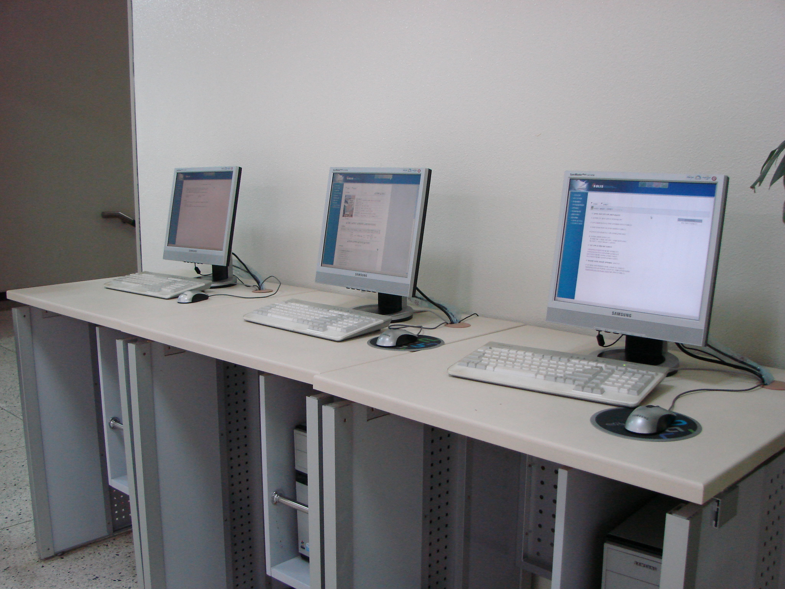
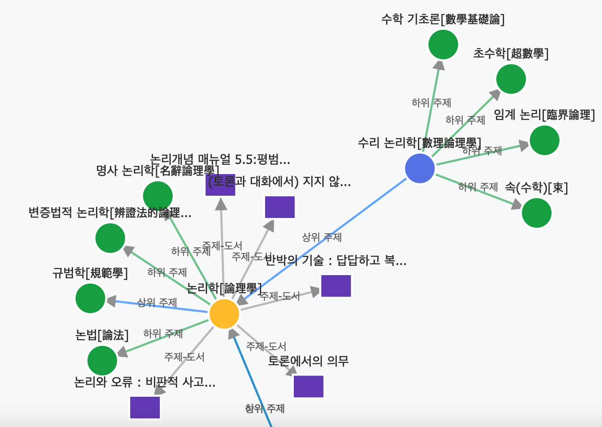

정체된 도서관 검색
도서관 정보 검색은 수십 년간 큰 변화 없이 '소장처 확인' 수준에 머물러 있습니다. 이용자의 다양한 정보 요구를 충족시키기 어렵고, 주제 기반의 깊이 있는 탐색이 어렵습니다.
이용자의 정보 탐색 능동성 제고
+
다가오는 AI 시대에 적의한 새로운 정보 탐색 경험을 제공
도서관 내 비치된 검색용 PC, Youtube, ChatGPT에서 영감을 받았습니다.
도서관 정보 검색은 수십 년간 큰 변화 없이 '소장처 확인' 수준에 머물러 있습니다. 이용자의 다양한 정보 요구를 충족시키기 어렵고, 주제 기반의 깊이 있는 탐색이 어렵습니다.
상업적 추천 알고리즘은 이용자를 편향된 정보 환경에 가두어 '정신적 비만'을 유발합니다. 이러한 상황 속에서 도서관은 이용자에게 정보의 선택권을 보장하는 좋은 정보 제공자 입니다.
최근 ChatGPT와 같은 AI가 정보 습득의 주 원천이 되고 있습니다. 도서관이 그동안 축적한 '메타데이터'는 이러한 AI 자동 생성의 유용한 근거(grounding)이 될 수 있습니다.

도서관의 지적 자산인 '주제명 표목'을 LLM 기술로 재탄생시켜,
분절된 지식을 하나의 거대한 지식 네트워크로 연결합니다.
노드 257,541개 | 관계 3,433,455개+
기존의 '주제명 표목표' 시스템에 조금의 비용 투입만으로도 이용자에게 새로운 정보 탐색 경험 제공 가능
LLM을 활용해 부족했던 주제명 정의를 상세하게 보강하여 각 주제의 의미론적 가치를 극대화합니다.
자연어 처리와 벡터 임베딩을 통해, 이용자의 일상적인 표현만으로도 가장 적합한 정보 자원에 도달할 수 있도록 돕습니다.
벡터 유사도 분석과 LLM 기반 관계 생성을 통해 단절된 지식들을 연결하고, 풍부한 탐색 경로를 제공합니다.
단순한 서명·주제명 검색을 넘어, 이용자가 '자연스러운' 표현만으로도 정보 요구를 해결할 수 있도록 합니다.
'Everything is connected'의 정신 아래 도서관의 '메타데이터' 자원을 활용하여 이용자의 지적 세계의 탐험을 돕습니다.
"아프리카 역사에 대한 개괄적인 책"과 같은 자연어 질문만으로 원하는 도서를 찾고, 관련 주제로 자연스럽게 탐색을 확장할 수 있습니다. KDC(한국십진분류법) 연계를 통해 온라인 탐색이 실제 서가 위치 안내로 이어집니다.
지식 네트워크를 직접 눈으로 보며 탐험하는 경험을 제공합니다. 특정 주제를 중심으로 어떤 지식들이 어떻게 연결되어 있는지 직관적으로 파악하고, 생각지도 못했던 새로운 관심사를 발견하는 '지적 탐험'을 즐길 수 있습니다.

주제명 표목 네트워크를 지식 기반(Knowledge Base)으로 활용하는 RAG(검색 증강 생성) 챗봇입니다.
"RAG가 뭐지?"와 같은 질문부터 "APA 스타일로 과제를 써야 하는데 참고할 만한 자료 추천해줘" 같은 복잡한 요구까지, 신뢰성 높은 답변과 관련 자료를 함께 제공합니다.
이용자와 도서관, 그리고 우리 사회 모두를 위한 가치를 창출합니다.